Introduction
Day to Day the amount of waste littered on roads is increasing. With the ban on plastics, yet the major littering occurs at bus stands and Railway stations includes the water bottles, aluminum cans and plastic bags which are hazardous to the environment. Additionally no one bothers about the social responsibility to dump the waste in the dustbins thereby causing a serious issue. This project deals with environment friendly reverse vending machine. The smart machine accepts the plastic waste bottles, aluminum waste cans and plastic bags and uses Imageprocessing based system consist of camera to capture and analyze the waste to check if the material inserted in the machine is either of the three and it provides credit points in return to the person recycling the waste.
A Reverse vending Machine is a system which accepts different wastes for recycling and in return dispenses money or credit points to the person who recycles the waste. The amount of credit points calculated based on the type of waste inserted in the machine. This invention relates in general to waste management and recycling the plastic and other waste in the environment. The collected waste is further segregated in the machine and collected in different waste bins which can be collected for recycling. If the bins are full sms notification will be sent to the concerned authorities. The littering of plastic wastes in the environment and less willingness to recycle the plastic presents a continuing problem to environment and to all the living beings which is expected to be handled using the proposed project.
About the Project
Our reverse vending machine (RVM) project has three primary objectives aimed at revolutionizing recycling practices and user engagement. The first objective centers around user identification and credit points retrieval using RFID technology. By integrating RFID readers with our system, we can uniquely identify users and retrieve their credit points from an online database in real-time.This process enhances user experience by personalizing interactions with the RVM and encouraging continued participation in recycling activities. We delve into the technical nuances of RFID systems, including hardware selection and backend database architecture, ensuring seamless connectivity and data security. The second objective focuses on waste segregation through image recognition powered by Raspberry Pi. Utilizing the camera module and machine learning algorithms, our RVM identifies and segregates different waste items such as plastics, cans, and wrappers upon deposition. This integration enhances recycling efficiency by automating the segregation process and contributes to environmental sustainability through effective waste management. We discuss the intricacies of image processing, Raspberry Pi integration, and performance optimization techniques to achieve accurate and real-time waste segregation.
Our third objective involves bin monitoring and alert systems using ultrasonic sensors and GSM technology. By deploying ultrasonic sensors to monitor the fill level of the waste bin and GSM modules for communication, our RVM can send real-time alerts to relevant authorities based on predefined capacity thresholds. This proactive approach optimizes waste collection logistics, ensures timely emptying of bins, and contributes to cleaner environments. We explore the technical aspects of sensor integration, GSM communication setup, and operational efficiency, highlighting the potential impact of proactive waste management on resource utilization and municipal services. In summary, these objectives collectively aim to transform traditional recycling processes into a sophisticated, user-friendly, and environmentally conscious system. Through advanced technologies such as RFID, image recognition, and IoT-enabled monitoring, our RVM project sets a new standard for sustainable waste management, user engagement, and community involvement in recycling initiatives.
How It Works
The operational workflow of the RVM is meticulously designed to automate and optimize the waste recycling process.This section provides a comprehensive overview of the sequential steps involved in using the RVM, from user interaction to waste segregation and recycling. To begin using our reverse vending machine as a new user, the first step is to obtain an RFID card from the administrator's office.
When approaching the machine for the initial setup, the user should press the "Recycle" button to begin the registration process. Upon scanning their RFID card, which is unrecognized in the system for new users, the machine will display a website link prompting the user to register. By following this link, the user can access our registration portal and create a new account by providing necessary details. During registration, the user will be asked to input the RFID number associated with their card. To retrieve this number, they can press the "Know Your RFID" button on the machine, which will display the required information. Once the registration is complete and the user has successfully logged in to the website using their newly created credentials, they can verify their credit points tied to the RFID card. This comprehensive process ensures that new users are seamlessly integrated into our system, allowing them to access their account details and credit points before engaging in recycling activities with our reverse vending machine.
Block Diagram
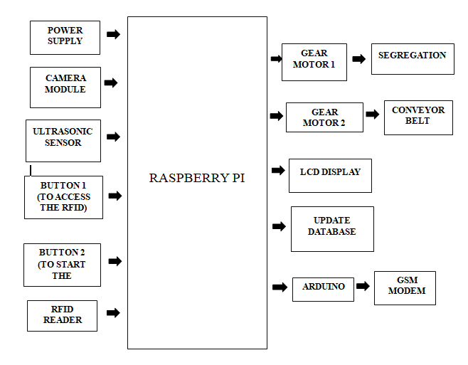Component Details
1.Raspberry Pi
At the heart of the RVM's operations lies the Raspberry Pi, a versatile single-board computer renowned for its flexibility and computational power. The Raspberry Pi serves as the central processing unit, orchestrating various tasks essential to the recycling process. Its responsibilities encompass image processing, RFID communication, motor control, and data management. The Raspberry Pi interfaces with other hardware components, including the RFID reader, LCD display, camera, and motor driver, to execute predefined workflows seamlessly. By leveraging its GPIO (General-Purpose Input/Output) pins, the Raspberry Pi orchestrates precise control over connected peripherals, enabling efficient coordination of recycling activities.

2. RFID Reader
The RFID reader plays a pivotal role in user identification within the RVM. Equipped with radio-frequency identification (RFID) technology, this component scans RFID cards presented by users to initiate recycling transactions. Upon detecting an RFID card, the reader captures the unique card ID, which is subsequently transmitted to the Raspberry Pi for processing. The Raspberry Pi queries the online database using the captured RFID information to retrieve the user's credit points associated with their account. The user's credit points are then displayed on the LCD screen, providing real-time feedback and encouraging continued engagement in recycling activities.
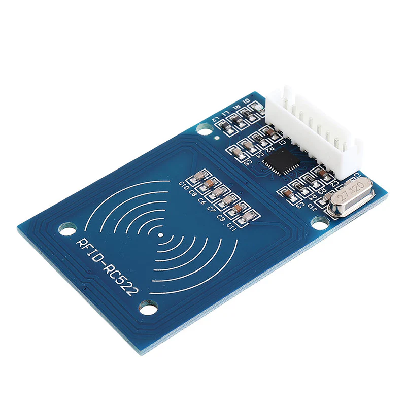3. LCD Display
The LCD (Liquid Crystal Display) serves as the user interface, presenting critical information to users throughout the recycling process. Upon RFID authentication, the LCD displays the user's current credit points retrieved from the database. This visual feedback enhances user experience by providing transparent and immediate insights into their recycling contributions. Additionally, the LCD display may present instructional messages or status updates during the recycling process, ensuring clear communication and user engagement. The integration of the LCD display enriches the RVM's user interface, facilitating intuitive interactions and promoting active participation.
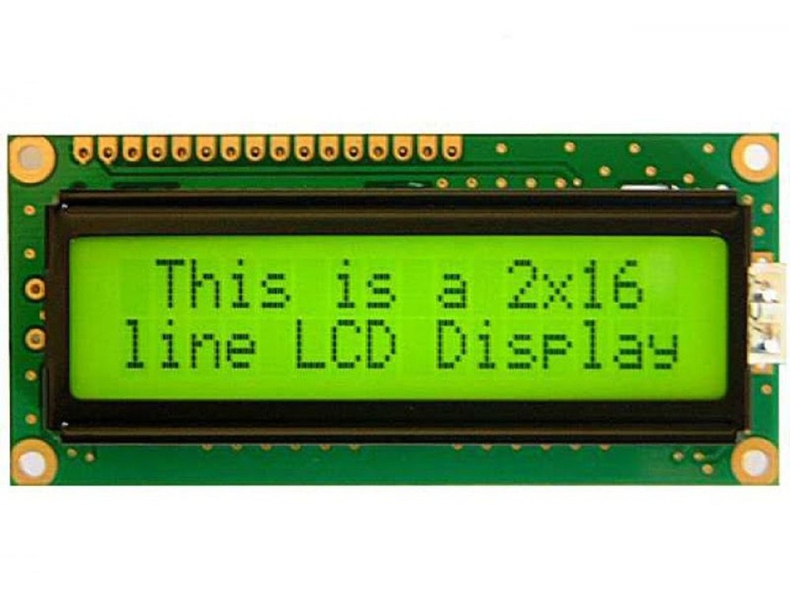4. Motor Driver and Motors
The motor driver and associated motors enable physical movement and automation within the RVM. These components are responsible for tasks such as controlling the conveyor belt and positioning the dustbin for waste collection. The motor driver acts as an intermediary between the Raspberry Pi and the motors, translating digital signals into precise motor control commands.For instance, upon successful identification of a recyclable item through image recognition, the Raspberry Pi signals the motor driver to activate the conveyor belt motor. This action transports the item towards the designated dustbin, facilitating automated waste segregation and collection.
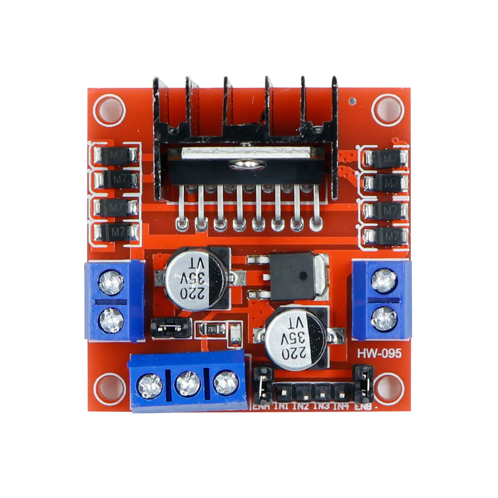6. GSM Module
Real-time communication and remote monitoring capabilities are facilitated by the GSM (Global System for Mobile Communications) module integrated into the RVM. This component enables wireless data transmission and SMS (Short Message Service) alerts to designated authorities regarding bin status and operational metrics. Using the GSM module, the RVM communicates critical information, such as bin fill levels detected by ultrasonic sensors, to ensure proactive waste management. Automated alerts sent to authorities facilitate timely bin emptying and maintenance, optimizing operational efficiency and service continuity.

7. Camera Module
The camera serves as the visual input device for image recognition within the RVM. When a user deposits a recyclable item into the machine, the camera captures images of the item for analysis. These images are processed by the Raspberry Pi using image recognition algorithms to identify the material type (e.g., plastic, metal, paper).The integration of image processing technology enables automated waste segregation, allowing the RVM to sort recyclable items into designated bins based on material composition. This automated approach minimizes manual intervention, enhances efficiency, and ensures accurate sorting of recyclable materials.
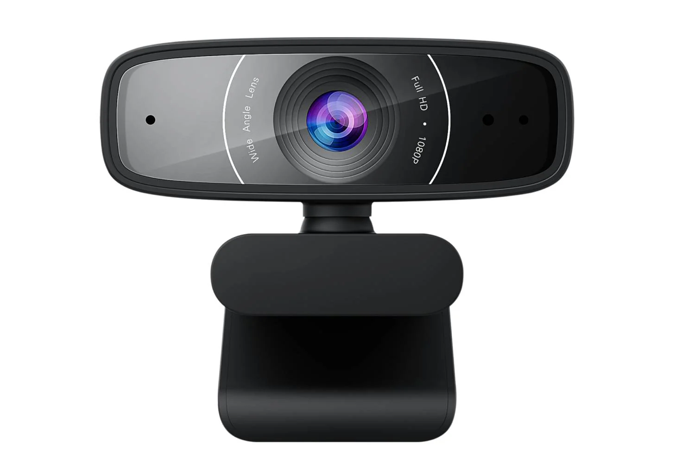7. Buttons
User interaction with the RVM is facilitated through strategically placed buttons and sensors. These components provide users with intuitive control over the recycling process, allowing them to initiate transactions or interact with the machine effectively. Buttons may be used for functions such as initiating the recycling process or requesting RFID card scanning for new users.In summary, the comprehensive integration of hardware components within the RVM enables seamless automation and optimization of the recycling process. By leveraging technologies such as RFID, image recognition, and real-time communication, the RVM represents a significant advancement in sustainable waste management practices, promoting environmental stewardship and community engagement.
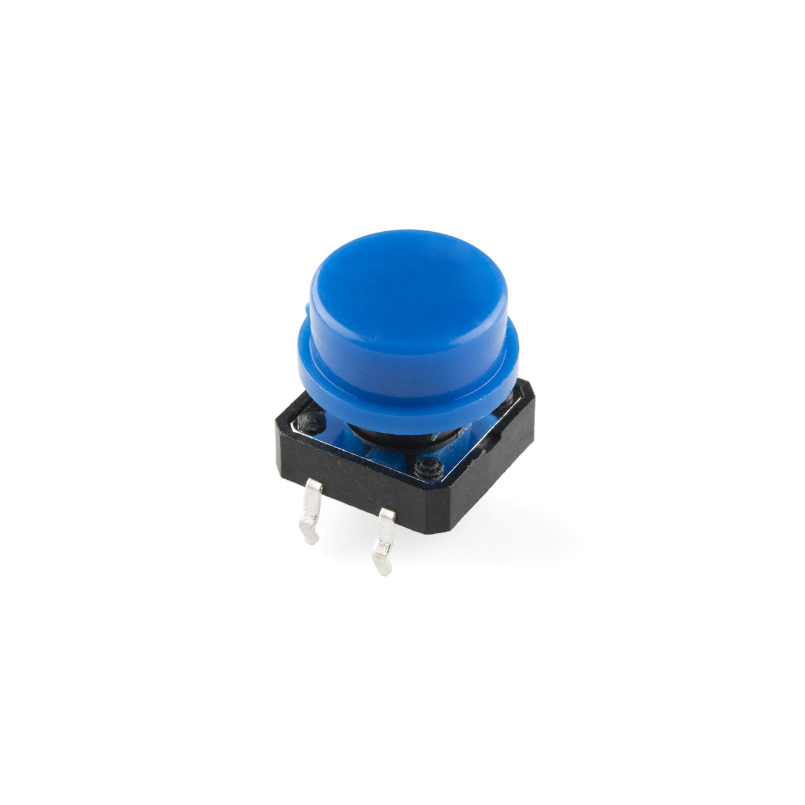7. Gear Motor
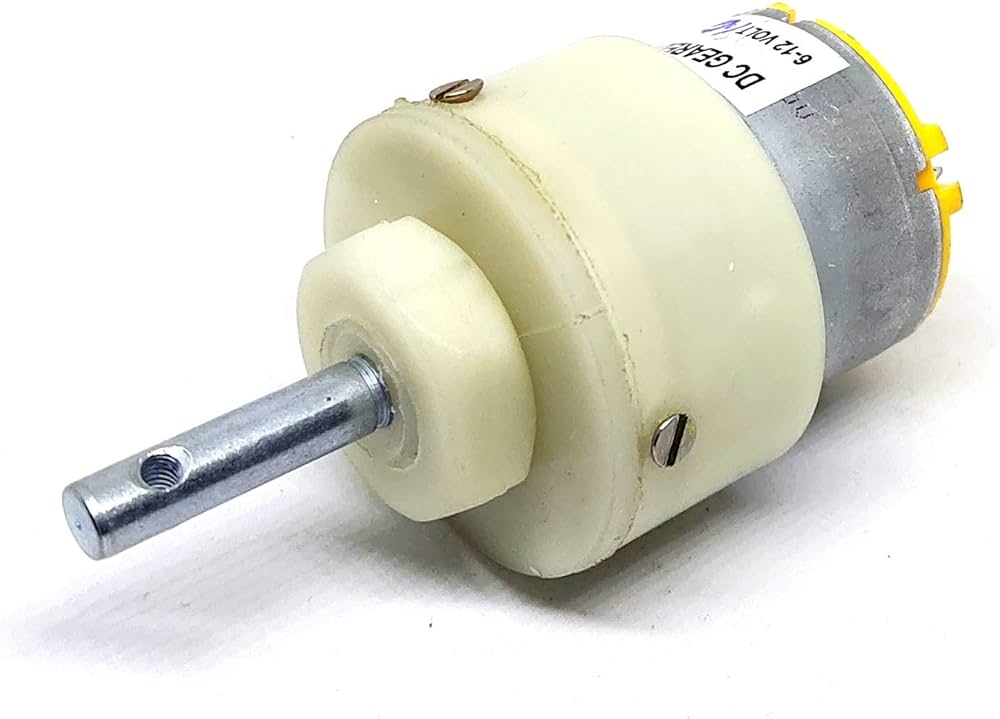Team Members
Name: Prasad Badiger
USN: 2GI21EC413
Name: Shivanand Naganuri
USN: 2GI21EC413

Name: Shreeshail Kedar
USN: 2GI21EC413

Name: Yash Lohar
USN: 2GI21EC413
Gallery
View images and videos of our project.
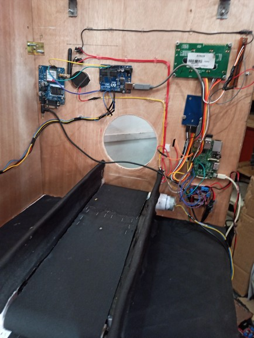
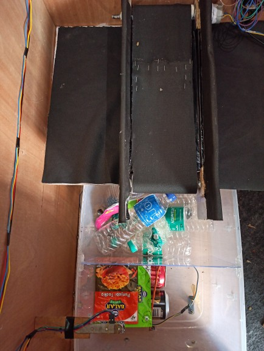
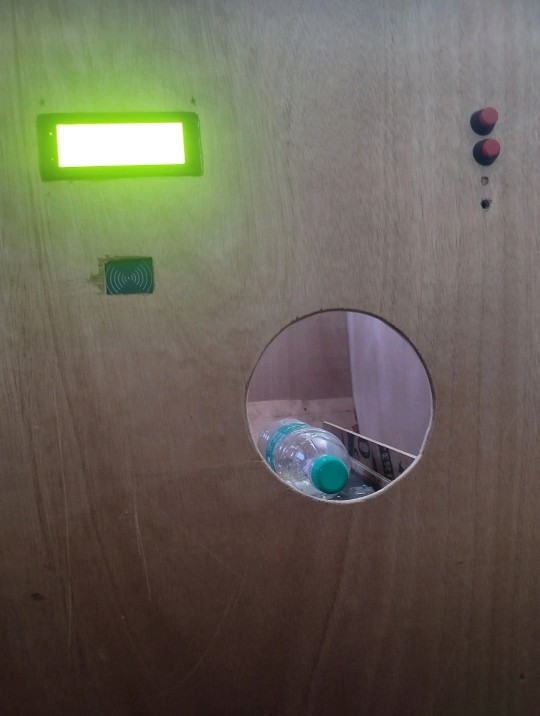
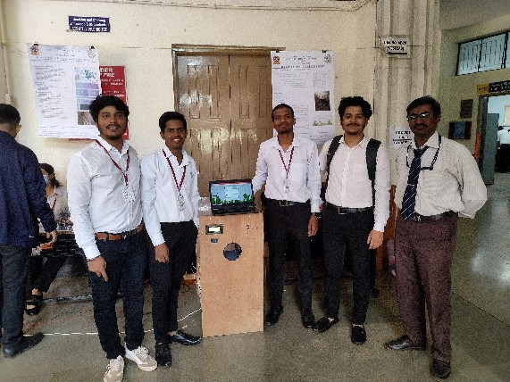
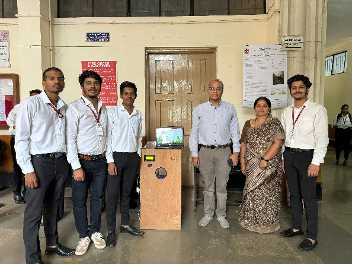